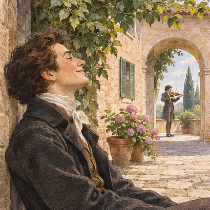
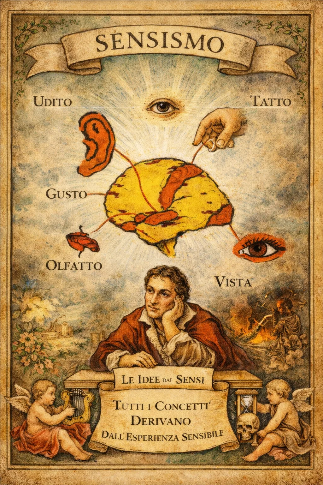
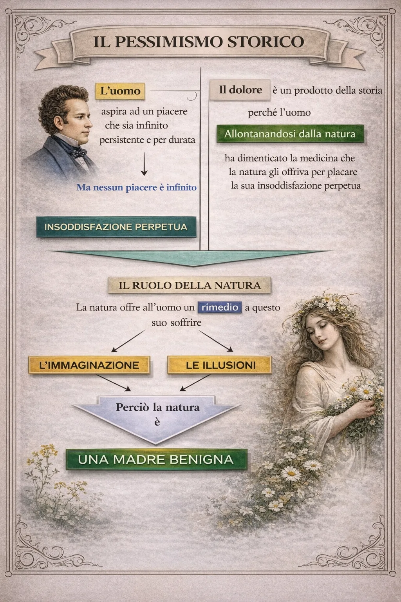

Natura e immaginazione
Gli antichi, secondo la visione di Leopardi in questa fase, erano più vicini alla natura: miti, fantasia, imprese eroiche e illusioni davano forza alla vita.
Lezione 5 di 8 · L’immagine del mondo
Perché la Natura appare benigna al giovane Leopardi?

Apri gli approfondimenti e gli esercizi ↓
Segui le linee che collegano i sensi al centro della tavola.

Guarda l’orecchio disegnato a sinistra. Hai mai riconosciuto qualcuno in corridoio solo dal passo? Prima senti un ritmo; poi lo associ a una persona. La figura rende visibile questo viaggio dalla sensazione all’idea.
Anche a occhi chiusi distingui la ruvidità della pietra dal liscio di un vetro. La parola «ruvido» ha senso per te perché puoi richiamare un’esperienza del tatto.
La scritta in basso riassume una tesi filosofica: le nostre idee si formano a partire dall’esperienza sensibile. Il cervello al centro raccoglie simbolicamente le vie attraverso cui il mondo ci raggiunge.
Nel testo dell’Infinito incontrerai due gesti: guardare e udire. La siepe dà agli occhi un limite, mentre il vento muove le foglie e arriva all’orecchio. Da queste due esperienze avrà inizio il viaggio del pensiero.
Leggi prima le due colonne in alto. Dove si incontrano le loro frecce?

Pensa a un brano che ami. Puoi riascoltarlo, ma ogni ascolto finisce. Il giovane Leopardi riconosce qui una sproporzione: ogni piacere ha un limite, mentre vorremmo goderne senza fine, per intensità e durata.
Gli antichi, secondo Leopardi, potevano credere più intensamente nei propri sogni di gloria e di felicità. La ragione moderna svela quelle illusioni e rende più scoperta l’insoddisfazione. Qui sta il significato di «pessimismo storico».
In basso una figura coronata di fiori accompagna due parole: «immaginazione» e «illusioni». Il pensiero può ampliare ciò che i sensi offrono; un ideale può sostenere una vita. Sono i doni che, in questa fase, fanno apparire la Natura una madre benigna.
Se nessun piacere reale è infinito, quale piacere può dare una siepe che impedisce di vedere? Per rispondere, prova l’esperimento della lezione successiva.
Un’idea fondamentale del pensiero leopardiano
L’essere umano desidera un piacere che non finisca, per intensità e per durata. Ma ogni piacere concreto ha un confine: prima o poi termina, o non ci basta più.
Questa teoria viene elaborata esplicitamente nello Zibaldone soprattutto dal 1820: la presentiamo come chiave interpretativa del pensiero leopardiano, non come un manifesto già definito nel 1819.
Osserva come desiderio illimitato, insoddisfazione, immaginazione e illusioni sono collegati nello schema. Tocca l’immagine per ingrandirla.
Nel primo Leopardi la natura appare come fonte di immaginazione e illusioni capaci di alleviare l’infelicità. Il progresso della ragione dissolve progressivamente quelle illusioni.
Gli antichi, secondo la visione di Leopardi in questa fase, erano più vicini alla natura: miti, fantasia, imprese eroiche e illusioni davano forza alla vita.
La modernità accresce la conoscenza razionale, ma indebolisce gli inganni vitali dell’immaginazione. La consapevolezza del limite può rendere più doloroso il vivere.
È un’etichetta critica per indicare una fase in cui l’infelicità è spiegata soprattutto attraverso la storia dell’umanità: il distacco dalla natura e l’avanzata della ragione. Non significa che ogni uomo dell’antichità fosse davvero felice.
All’inizio del suo percorso filosofico Leopardi le attribuisce il potere di offrire illusioni e immaginazione, capaci di rendere la vita più sopportabile. È una concezione che in seguito cambierà radicalmente.
Possono alimentare speranza, grandezza, entusiasmo, bellezza. La ragione ne mostra il carattere illusorio, ma non per questo cancella il bisogno umano di immaginare.
Non confondere questa fase con il successivo pessimismo cosmico, quando Leopardi riconoscerà nella natura stessa una causa dell’infelicità dei viventi.
«Ma sedendo e mirando, interminati
spazi di là da quella, e sovrumani
silenzi…»
La siepe è un limite reale. Invece di fermarsi al dato visibile, Leopardi si affida all’immaginazione: la mente costruisce ciò che gli occhi non possono vedere. Qui l’immaginazione non è una fuga senza valore, ma un’esperienza poetica intensa.
L’infinito non è una spiegazione in versi del pessimismo storico. La poesia mette in scena un’esperienza di limite, immaginazione e immensità. Il quadro filosofico aiuta a leggerla, ma non la esaurisce.
Perché sottrae forza alle illusioni e alla fantasia che potevano consolare e sostenere la vita: il vero mette in luce i limiti dei piaceri e delle speranze.
No. Nell’orizzonte del pessimismo storico la natura ha ancora una funzione prevalentemente benefica, attraverso l’immaginazione e le illusioni.
Proprio nella siepe: l’ostacolo impedisce di guardare oltre, ma lascia spazio alla mente per figurarsi gli spazi che non vede.
Approfondimenti: Treccani, Dizionario Biografico, «Giacomo Leopardi» · Treccani, «Leopardi filosofo».